来源：https://fizwc60vtp.feishu.cn/docx/UbhSdMtqdoW09vxGDL6cPnfengb
大家好，我是XM，一直都很少输出，今天也是第一次和大家分享在多多开店的一个赚钱的经历。
希望我的经历能给大家带来一些帮助，文末有分享开店的一些sop。
我是今年的7月才开始学习电商这一块，5月份参加过小红书店铺的航海，快退店的时候才开了一单，但是当时在小红书开店兴趣已经不是很大了，所以没有什么电商的基础，也没在小红书吃到甜头，在多多开店是偶然，朋友带的。
刚开店的时候，基本上是什么都不会，也不像现在有什么这个SOP那个SOP，我自己先注册好了店铺，缴纳了1000元保证金，然后朋友给我选了三个品，店就这么开起来了，刚开始的时候采集工具也不会用，主要是没接触过这个，干什么都怕错，然后一星期之内品就开单了，最开始的时候是几十块，但是当时开单就很开心了。
然后开店半个月左右突然数据就开始暴增。
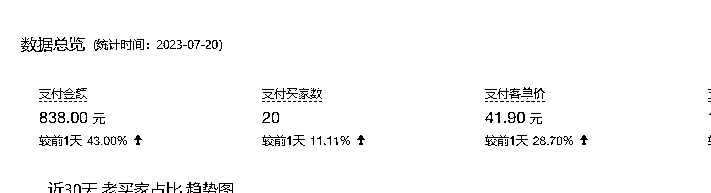
我记得当时的投产比很高，800一天业绩，大概纯利润还有五百多，对于这个数据，当时还是很满意的，但是我这个人有个毛病，也是我最大的痛点，就是我很难坚持去做一件事，就像一个项目，我把它拆解完了，也赚到了一定的钱，然后会突然有种索然无味的感觉，所以7月我以干了半个月赚了5800多圆子收尾。
然后我以为我不会在干这个了，后面那段时间好像就回去玩NFT和搬砖去了。
7月干的类目是：加密课，其实这个类目，非常暴利也非常违规，包括现在的市场依旧有很多人在做，加密课基本上都是最新的且强版权，跟考研考公一样是非常容易被起诉的，新手小白其实不建议做这个类目。
开始我是属于不懂，但是也属于运气好。
七月份知识付费：500+ 找加密课渠道，差点被割1200+（什么代理，价格并不优惠）500+纯属交个朋友，对方很好，给我讲了一些他做这个靠什么赚钱的，做什么类目的，还给了我渠道
8月又重新把店开起来，是因为受刺激了，因为我看到朋友日入几千非常心动，但是一直问朋友，他也不肯告诉我他玩的什么类目（闷声发大财是对的）然后我等到他把手上一批店都干封了以后，我说我这边还有一些店可以开（有机会我先排个队）我们又一起开了5个店左右，单店利润在1万-3万之间，同一批的店铺，有的店能卖的挺好，有的店一般，可能开店也讲究一个爆品率，但是开店最主要还是跟运营和选品有关。
当时开店的一些数据：10月底已全部退店
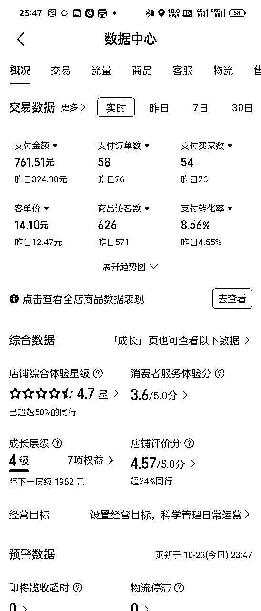
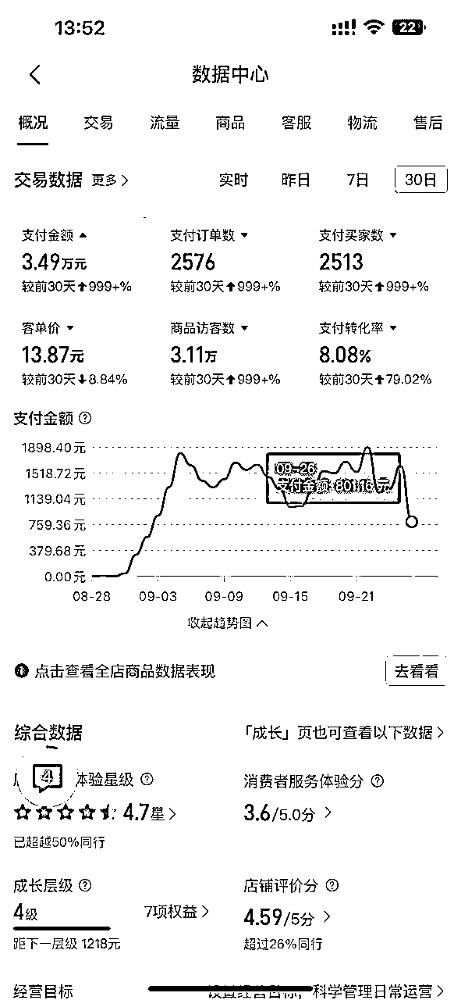
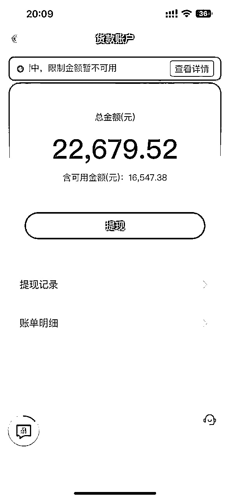
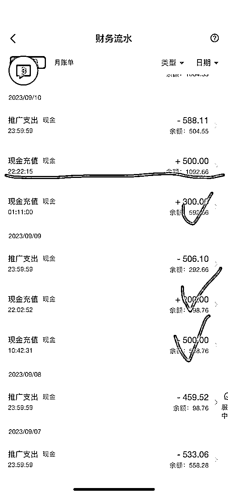
其实整体数据还是可以的，但是不想继续开的原因有多方，比如一起合伙开店的不想开了，还有家里有一些事情需要处理，没有时间精力去运营这些，当然其实开店可以实现半自动化，但最主要的原因还是合作伙伴退出了，在他退出之后，10月底我接手运营了一个星期左右，店铺底子打的比较好，基本1个多月没有补品，每天纯利润稳定单店在600左右，跟九月比，业绩下滑50%，原因也是做的人比较多了，加上这个类目其实风险也比较大，后面就把这批店关了，可能在一些朋友眼里看来，开一个店很不容易，很宝贵，但是我们做的这种类目，店铺基本当做是消耗品，一是不可以长期卖，不可以确定是否会吃到起诉，二是平台有时候抽风是随机关店的，我们自己测试被封店的店铺也有4-5个。
8---10月干的类目是考研考公，也是非常不建议新人干的类目，因为在电商去做这类产品，万一有版权问题，平台是非常好取证的，可能你赚的还没有你卖的多，有的新人还会因为这个吃不好睡不好，因为我接触过，有学生干这个然后被起诉了，这个对个人心里素质来说还是很影响的。
当然万一被起诉了，或者你是个小白无意之间也不知道自己侵权了上架了什么东西被别人取证了，其实也不用特别害怕，对方要的只是钱，一般都可以和解。
所以如果没有做好心理准备，一点风险不想承担，想靠卖资料挣很多钱的，其实不太实际。
干这一块就是有被起诉的风险，包括网盘去分享免费资料，都会有打假人。
10月底退了一批店铺以后，11月选择了竞争也卷，风险相对偏小的素材类，相当于放弃了之前已经跑通的高风险高利润模型，重新启航。
11月做的店铺，开了5个左右，单日最高500+这样，到11月底业绩是8000多左右，但是整体利润不高，因为前期投产比拉的很低，所以前半个月基本是亏本，半个月后才开始赚钱。
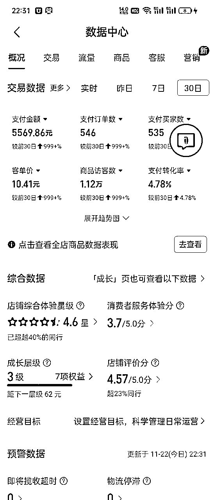
然后我得出一个结论：这类目是真不赚钱啊！！！！跟我之前开的店比！！！而且这售后也是一点也不少！！而且经常还有人问一些奇奇怪怪的问题。
当然我没有就此放弃，蚂蚁再小也是肉，把它当成低保混就行了！！！这个想法挺消极的，但是后面我很快还是推翻了这个想法，因为干同样的事情，就是有人赚钱有人亏钱，我一直说这个东西不好干，没有以前那么赚钱，其实就是我还没找到很赚钱的品，也没能挖掘出赚钱的品，这个东西可能一开始选品没经验，但是你选100个，1000个之后你就有经验了。
到了12月我突然发现一个问题，就是不爱输出，不爱记录导致我什么都价值的经验都没留下，只能凭借我五秒钟的记忆去想当时的我都干了些啥，所以让我回忆，很多细节我已经记不起来了，但是我觉得真的要认真记录和好好输出，于是我在12月整理了一些SOP。
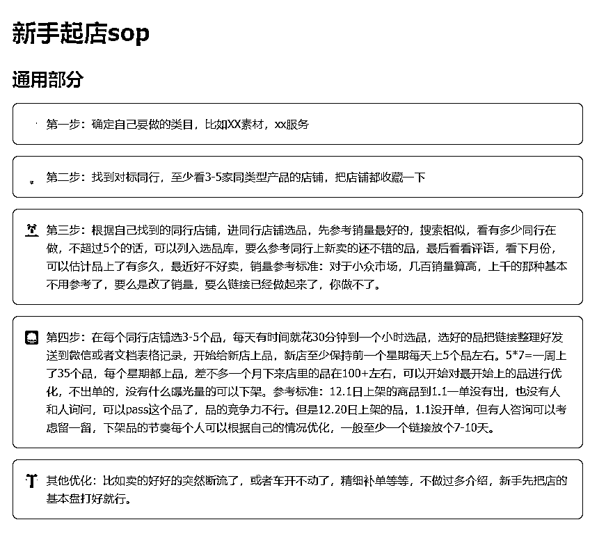
最需要要注意的就是版权问题，一般上企查查，阿里商标，天眼查或官网都可以，不过有很多没登记过的查不到的照样可以起诉，因为原作者可以提供创作时的素材一样视作有效，所以强版权的课程需要谨慎选品，搞不好一个赚的不够赔的。
我这边有一些起诉的经验，也咨询过律师这块，万一不小心被起诉了，可以提供一些经验参考。
天眼查商标查询 https://shangbiao.tianyancha.com/
天眼查著作权查询 https://banquan.tianyancha.com/rj
天眼查专利查询https://zhuanli.tianyancha.com/
一、强版权课程
如东奥，正保等会计课程，还有大机构的财务课等，各种考公考研带人名的，影视版权，书籍版权，起诉概率非常之高，赔偿也很高，部分机构+律师是非常喜欢告的，不管你有没有出售反正会先取证，或者他们会拍一单，然后取证。
二、擦边类
上了电商平台，不管是是视频还是图片，或者内容有擦边信息的，链接被打掉很简单，然后波及的是店铺被封，降权，限制这样，参考产品：XX美女写真，擦边的，L的，XX私房照片，XX视频。
三、低俗类
例如XX撩妹技巧，恋爱课，等等都被归类为低俗，网盘有时候都发不出去，链接也容易被投诉，店铺被限制，被封。
四、封建迷信
风水，易经，算命，国学等等，有时候被人投诉链接就会被禁售，下架，但依旧做的人一批一批
五、代XX服务
先确定自己的渠道货源正规，曾遇到过一个案例，被骗人京东卡是低价买来的，然后再京东上买苹果机，最后机器被追回，人也XX，自己提供的服务没问题，且可以长期稳定做是OK的，另外看客户提出的要求是否合理，有的给你加钱，去弄一个什么，或者要扫码，让你接收什么压缩包里面有木马的这种都是有人中招过的。
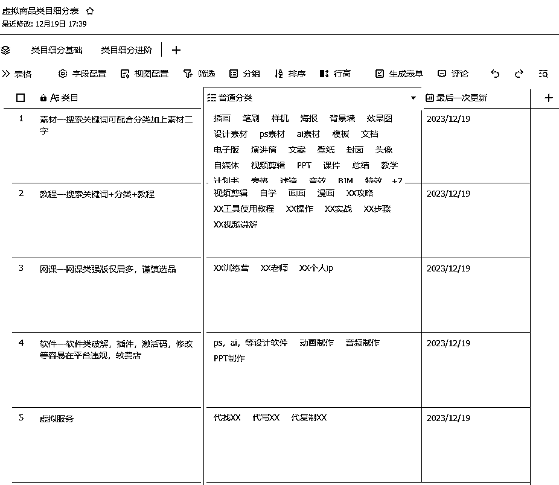
这是我做的一个大类目，然后我后面又做了一个更细分的，因为我也不是天天去更新，主要是根据每天自己开店有一些选品的话，我会把这些类目做一些归类。
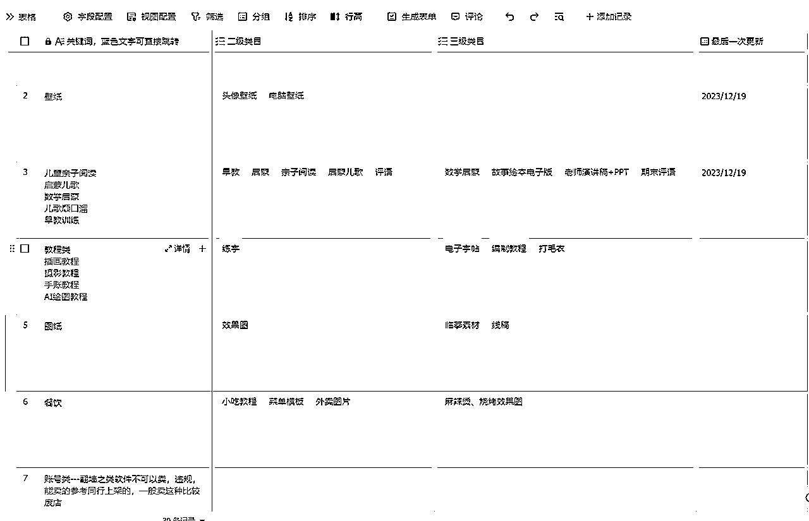
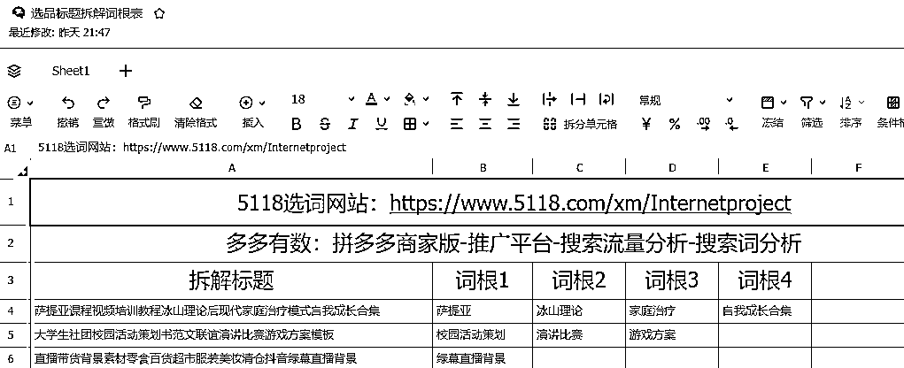
这个是打算自己和团队一起用的，所以后面不作过多展示，我大概的理念就是，反正每天都要选品，我就顺便把标题记录了，然后把词根拆出来，小伙伴说挺好用的。
小伙伴的反馈：
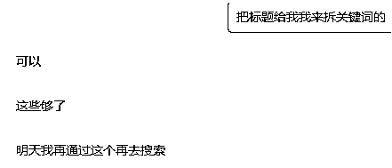
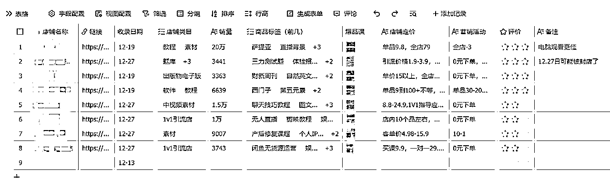
这算是我最喜欢的表格没有之一！！！因为我本来就喜欢关注别人店铺，但是一直没有整理出来，据我保守估计300+以上应该是有的，但是这么好的东西，我也是有个人私心的，我做了一个可以给团队朋友看的，然后又做了一个我珍藏版的店铺（珍藏版就是我已经从几百个店铺里挑出了那些跟着人家上品就出单的店）这个是绝不分享的哈哈哈哈~但是一般收录的我也不是什么店都关注，也可以说够小白抄的
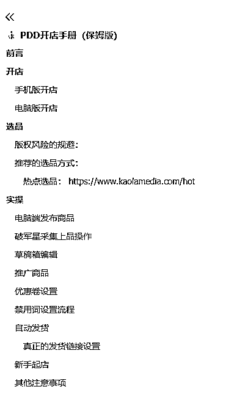
这个根据我看的一些官方文档，还有同行总结的一些进行了一些改编，适合小白看
完整版：
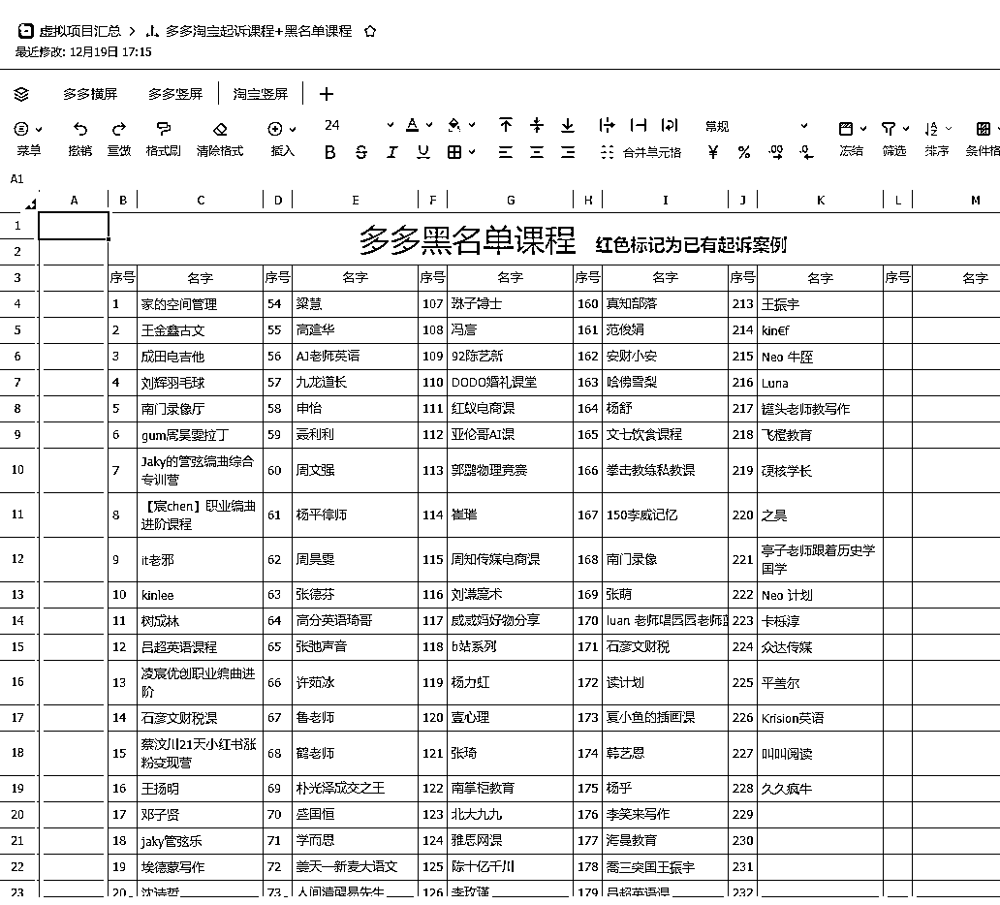
黑名单课程的意思是，这些品的风险都比较大，目前还在收录中，最近有几个起诉案例还没写上去，都是同行有过经验，或者踩过坑的，淘宝版的比多多版的更多，因为淘宝规则比较多。
这个我还没有写完，只能大概看一下，有的人可能不知道使用工具会更方便，也不知道价格能便宜，目前我个人使用感受来讲，破军星和穿云箭没什么区别，人多的话，团队几个人拼一个账号就行了，也欢迎来跟我拼！！
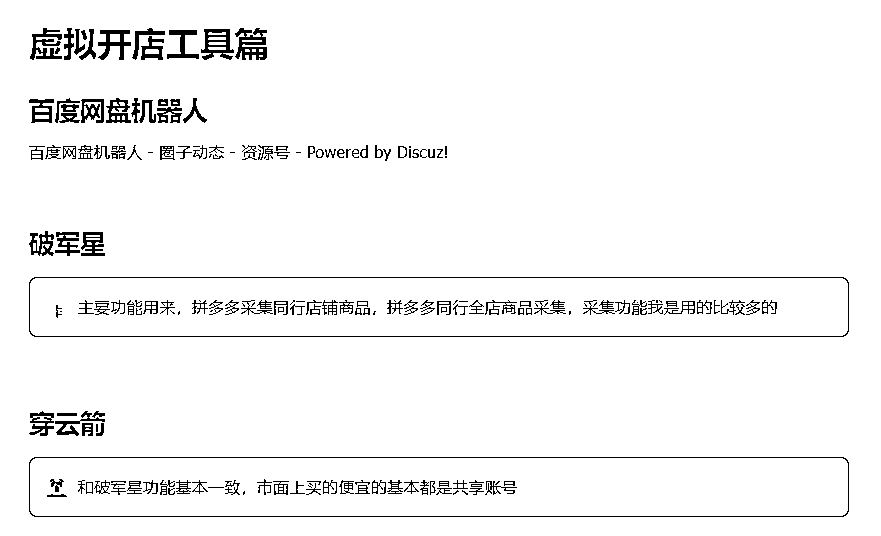
今年基本上已经快过完了，12月报名了大航海的风向标和小红书店铺，5月份没能开成的小红书店铺，1月份我又回来了！！！报名风向标的话主要是想提高自己挖掘信息的能力，小红书店铺的话，我希望是直接能变现，所以这一次选品的话，会拿其他店铺测得比较好的品去上，如果变现能力还不错的话，就给小伙伴们写一个小红书版的sop，然后最近还参加了其他两个小项目分别是红包封面和铭文打新，红包封面基本就搁置了，没有引流，只有闲鱼有几个问的，铭文是次次打新没赶上，不过这东西没啥可惜的，打新可能是肉，也可能是一个大比斗~
欢迎平时喜欢拆解项目的朋友和我链接！！本人有一定执行能力！！人好沟通事不多